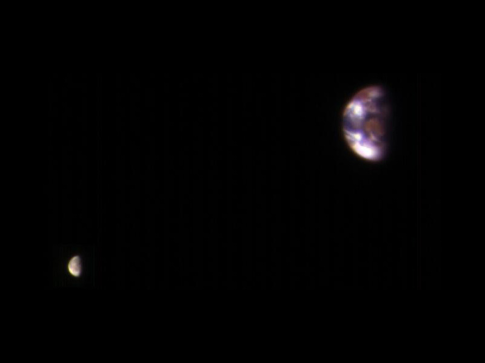

Earth is the third planet from the Sun and the only astronomical object known to harbour and support life. 29.2% of
Earth's surface is land consisting of continents and islands. The remaining 70.8% is covered with water, mostly by oceans,
seas, gulfs, and other salt-water bodies, but also by lakes, rivers, and other freshwater, which together constitute the
hydrosphere. Much of Earth's polar regions are covered in ice. Earth's outer layer is divided into several rigid tectonic
plates that migrate across the surface over many millions of years, while its interior remains active with a solid
iron inner core, a liquid outer core that generates Earth's magnetic field, and a convective mantle that drives plate tectonics.
1 / 5
2 / 5
3 / 5
4 / 5
5 / 5

Earth's atmosphere consists mostly of nitrogen and oxygen. More solar energy is received by tropical regions than polar
regions and is redistributed by atmospheric and ocean circulation. Greenhouse gases also play an important role in regulating
the surface temperature. A region's climate is not only determined by latitude, but also by elevation and proximity to moderating
oceans, among other factors. Severe weather, such as tropical cyclones, thunderstorms, and heatwaves, occurs in most areas
and greatly impacts life.
Earth's gravity interacts with other objects in space, especially the Moon, which is Earth's only natural satellite.
Earth orbits around the Sun in about 365.25 days. Earth's axis of rotation is tilted with respect to its orbital plane,
producing seasons on Earth. The gravitational interaction between Earth and the Moon causes tides, stabilizes Earth's
orientation on its axis, and gradually slows its rotation. Earth is the densest planet in the Solar System and the largest
and most massive of the four rocky planets.
According to radiometric dating estimation and other evidence, Earth formed over 4.5 billion years ago.
Within the first billion years of Earth's history, life appeared in the oceans and began to affect Earth's
atmosphere and surface, leading to the proliferation of anaerobic and, later, aerobic organisms. Some geological
evidence indicates that life may have arisen as early as 4.1 billion years ago. Since then, the combination of
Earth's distance from the Sun, physical properties, and geological history have allowed life to evolve and thrive.
In the history of life on Earth, biodiversity has gone through long periods of expansion, occasionally punctuated
by mass extinctions. More than 99% of all species that ever lived on Earth are extinct. Almost 8 billion humans
live on Earth and depend on its biosphere and natural resources for their survival. Humans increasingly impact Earth's
surface, hydrology, atmospheric processes, and other life.
Chronology
Formation
The oldest material found in the Solar System is dated to 4.5682 +0.0002 −0.0004 Ga (billion years) ago. By 4.54±0.04 Ga the primordial
Earth had formed. The bodies in the Solar System formed and evolved with the Sun. In theory, a solar nebula partitions a volume out of a
molecular cloud by gravitational collapse, which begins to spin and flatten into a circumstellar disk, and then the planets grow out of that
disk with the Sun. A nebula contains gas, ice grains, and dust (including primordial nuclides). According to nebular theory, planetesimals
formed by accretion, with the primordial Earth being estimated as likely taking anywhere from 70 to 100 million years to form.
Estimates of the age of the Moon range from 4.5 Ga to significantly younger. A leading hypothesis is that it was formed
by accretion from material loosed from Earth after a Mars-sized object with about 10% of Earth's mass, named Theia, collided
with Earth. It hit Earth with a glancing blow and some of its mass merged with Earth. Between approximately 4.1
and 3.8 Ga, numerous asteroid impacts during the Late Heavy Bombardment caused significant changes to the greater surface
environment of the Moon and, by inference, to that of Earth.
Geological history
Earth's atmosphere and oceans were formed by volcanic activity and outgassing. Water vapor from these sources
condensed into the oceans, augmented by water and ice from asteroids, protoplanets, and comets. Sufficient water
to fill the oceans may have been on Earth since it formed. In this model, atmospheric greenhouse gases kept the
oceans from freezing when the newly forming Sun had only 70% of its current luminosity. By 3.5 Ga, Earth's magnetic
field was established, which helped prevent the atmosphere from being stripped away by the solar wind.
As the molten outer layer of Earth cooled it formed the first solid crust, which is thought to have been mafic in
composition. The first continental crust, which was more felsic in composition, formed by the partial melting of this
mafic crust. The presence of grains of the mineral zircon of Hadean age in Eoarchean sedimentary rocks suggests that at
least some felsic crust existed as early as 4.4 Ga, only 140 Ma after Earth's formation. There are two main models
of how this initial small volume of continental crust evolved to reach its current abundance: (1) a relatively steady
growth up to the present day, which is supported by the radiometric dating of continental crust globally and (2) an
initial rapid growth in the volume of continental crust during the Archean, forming the bulk of the continental crust
that now exists, which is supported by isotopic evidence from hafnium in zircons and neodymium in sedimentary
rocks. The two models and the data that support them can be reconciled by large-scale recycling of the continental crust,
particularly during the early stages of Earth's history.
New continental crust forms as a result of plate tectonics, a process ultimately driven by the continuous loss of
heat from Earth's interior. Over the period of hundreds of millions of years, tectonic forces have caused areas of
continental crust to group together to form supercontinents that have subsequently broken apart. At approximately
750 Ma, one of the earliest known supercontinents, Rodinia, began to break apart. The continents later recombined to
form Pannotia at 600–540 Ma, then finally Pangaea, which also began to break apart at 180 Ma.
The most recent pattern of ice ages began about 40 Ma, and then intensified during the Pleistocene about
3 Ma. High- and middle-latitude regions have since undergone repeated cycles of glaciation and thaw, repeating
about every 21,000, 41,000 and 100,000 years. The Last Glacial Period, colloquially called the "last ice age",
covered large parts of the continents, up to the middle latitudes, in ice and ended about 11,700 years ago.
Origin of life and evolution
Chemical reactions led to the first self-replicating molecules about four billion years ago. A half billion years
later, the last common ancestor of all current life arose. The evolution of photosynthesis allowed the Sun's
energy to be harvested directly by life forms. The resultant molecular oxygen (O2) accumulated in the atmosphere
and due to interaction with ultraviolet solar radiation, formed a protective ozone layer (O3) in the upper atmosphere.
The incorporation of smaller cells within larger ones resulted in the development of complex cells called eukaryotes.
True multicellular organisms formed as cells within colonies became increasingly specialized. Aided by the absorption of
harmful ultraviolet radiation by the ozone layer, life colonized Earth's surface. Among the earliest fossil evidence
for life is microbial mat fossils found in 3.48 billion-year-old sandstone in Western Australia, biogenic graphite
found in 3.7 billion-year-old metasedimentary rocks in Western Greenland, and remains of biotic material found in 4.1
billion-year-old rocks in Western Australia. The earliest direct evidence of life on Earth is contained in 3.45
billion-year-old Australian rocks showing fossils of microorganisms.
During the Neoproterozoic, 1000 to 541 Ma, much of Earth might have been covered in ice. This hypothesis has been termed
"Snowball Earth", and it is of particular interest because it preceded the Cambrian explosion, when multicellular life
forms significantly increased in complexity. Following the Cambrian explosion, 535 Ma, there have been at
least five major mass extinctions and many minor ones. Apart from the proposed current Holocene extinction
event, the most recent was 66 Ma, when an asteroid impact triggered the extinction of the non-avian dinosaurs and other
large reptiles, but largely spared small animals such as insects, mammals, lizards and birds. Mammalian life has
diversified over the past 66 Mys, and several million years ago an African ape gained the ability to stand upright.
This facilitated tool use and encouraged communication that provided the nutrition and stimulation needed for a larger
brain, which led to the evolution of humans. The development of agriculture, and then civilization, led to humans having
an influence on Earth and the nature and quantity of other life forms that continues to this day.
Future
Because carbon dioxide (CO2) has a long lifespan in the atmosphere, moderate human CO2 emissions may postpone
the next glacial inception by 100,000 years.
Earth's expected long-term future is tied to that of the Sun. Over the next 1.1 billion years, solar luminosity
will increase by 10%, and over the next 3.5 billion years by 40%. Earth's increasing surface temperature will
accelerate the inorganic carbon cycle, reducing CO2 concentration to levels lethally low for plants (10 ppm for C4
photosynthesis) in approximately 100–900 million years. The lack of vegetation will result in the loss of
oxygen in the atmosphere, making animal life impossible. Due to the increased luminosity, Earth's mean temperature
may reach 100 °C (212 °F) in 1.5 billion years, and all ocean water will evaporate and be lost to space, which may
trigger a runaway greenhouse effect, within an estimated 1.6 to 3 billion years. Even if the Sun were stable, a
fraction of the water in the modern oceans will descend to the mantle, due to reduced steam venting from mid-ocean ridges.
The Sun will evolve to become a red giant in about 5 billion years. Models predict that the Sun will expand to roughly
1 AU (150 million km; 93 million mi), about 250 times its present radius. Earth's fate is less clear. As a red
giant, the Sun will lose roughly 30% of its mass, so, without tidal effects, Earth will move to an orbit 1.7 AU (
250 million km; 160 million mi) from the Sun when the star reaches its maximum radius, otherwise, with tidal effects,
it may enter the Sun's atmosphere and be vaporized.
Physical characteristics
Size and shape
The shape of Earth is nearly spherical. There is a small flattening at the poles and bulging around the equator
due to Earth's rotation. Therefore, a better approximation of Earth's shape is an oblate spheroid, whose equatorial
diameter is 43 kilometres (27 mi) larger than the pole-to-pole diameter.
The average diameter of the reference spheroid is 12,742 kilometres (7,918 mi). Local topography deviates from this
idealized spheroid, although on a global scale these deviations are small compared to Earth's radius: the maximum deviation
of only 0.17% is at the Mariana Trench (10,925 metres or 35,843 feet below local sea level), whereas Mount Everest
(8,848 metres or 29,029 feet above local sea level) represents a deviation of 0.14%. The point on the surface
farthest from Earth's center of mass is the summit of the equatorial Chimborazo volcano in Ecuador (6,384.4 km or 3,967.1 mi).
In geodesy, the exact shape that Earth's oceans would adopt in the absence of land and perturbations such as tides
and winds is called the geoid. More precisely, the geoid is the surface of gravitational equipotential at mean sea level
(MSL). Sea surface topography are water deviations from MSL, analogous to land topography.
Chemical composition
Earth's mass is approximately 5.97×1024 kg (5,970 Yg). It is composed mostly of iron (32.1%), oxygen (30.1%),
silicon (15.1%), magnesium (13.9%), sulfur (2.9%), nickel (1.8%), calcium (1.5%), and aluminum (1.4%), with the
remaining 1.2% consisting of trace amounts of other elements. Due to mass segregation, the core region is estimated
to be primarily composed of iron (88.8%), with smaller amounts of nickel (5.8%), sulfur (4.5%), and less than 1% trace elements.
The most common rock constituents of the crust are nearly all oxides: chlorine, sulfur, and fluorine are the
important exceptions to this and their total amount in any rock is usually much less than 1%. Over 99% of the crust
is composed of 11 oxides, principally silica, alumina, iron oxides, lime, magnesia, potash, and soda.
Internal structure
Earth's interior, like that of the other terrestrial planets, is divided into layers by their chemical or physical
(rheological) properties. The outer layer is a chemically distinct silicate solid crust, which is underlain by a highly
viscous solid mantle. The thickness of the
crust varies from about 6 kilometres (3.7 mi) under the oceans to 30–50 km (19–31 mi) for the continents. The crust and
the cold, rigid, top of the upper mantle are collectively known as the lithosphere, which is divided into independently
moving tectonic plates.
Beneath the lithosphere is the asthenosphere, a relatively low-viscosity layer on which the lithosphere rides.
Important changes in crystal structure within the mantle occur at 410 and 660 km (250 and 410 mi) below the surface,
spanning a transition zone that separates the upper and lower mantle. Beneath the mantle, an extremely low viscosity
liquid outer core lies above a solid inner core. Earth's inner core may be rotating at a slightly higher angular
velocity than the remainder of the planet, advancing by 0.1–0.5° per year, although both somewhat higher and much
lower rates have also been proposed. The radius of the inner core is about one-fifth of that of Earth. Density
increases with depth, as described in the table on the right.
Heat
The major heat-producing isotopes within Earth are potassium-40, uranium-238, and thorium-232.
At the center, the temperature may be up to 6,000 °C (10,830 °F), and the pressure could reach 360 GPa
(52 million psi). Because much of the heat is provided by radioactive decay, scientists postulate that early
in Earth's history, before isotopes with short half-lives were depleted, Earth's heat production was much higher.
At approximately 3 Gyr, twice the present-day heat would have been produced, increasing the rates of mantle convection
and plate tectonics, and allowing the production of uncommon igneous rocks such as komatiites that are rarely formed today.
The mean heat loss from Earth is 87 mW m−2, for a global heat loss of 4.42×1013 W. A portion of the core's thermal energy is
transported toward the crust by mantle plumes, a form of convection consisting of upwellings of higher-temperature rock. These
plumes can produce hotspots and flood basalts. More of the heat in Earth is lost through plate tectonics, by mantle upwelling
associated with mid-ocean ridges. The final major mode of heat loss is through conduction through the lithosphere, the majority
of which occurs under the oceans because the crust there is much thinner than that of the continents.
Tectonic plates
Earth's mechanically rigid outer layer, the lithosphere, is divided into tectonic plates. These plates are rigid segments
that move relative to each other at one of three boundaries types: at convergent boundaries, two plates come together; at
divergent boundaries, two plates are pulled apart; and at transform boundaries, two plates slide past one another laterally.
Along these plate boundaries, earthquakes, volcanic activity, mountain-building, and oceanic trench formation can occur.
The tectonic plates ride on top of the asthenosphere, the solid but less-viscous part of the upper mantle that can flow and
move along with the plates.
As the tectonic plates migrate, oceanic crust is subducted under the leading edges of the plates at convergent boundaries.
At the same time, the upwelling of mantle material at divergent boundaries creates mid-ocean ridges. The combination of these
processes recycles the oceanic crust back into the mantle. Due to this recycling, most of the ocean floor is less than 100 Ma
old. The oldest oceanic crust is located in the Western Pacific and is estimated to be 200 Ma old. By comparison,
the oldest dated continental crust is 4,030 Ma, although zircons have been found preserved as clasts within Eoarchean
sedimentary rocks that give ages up to 4,400 Ma, indicating that at least some continental crust existed at that time.
The seven major plates are the Pacific, North American, Eurasian, African, Antarctic, Indo-Australian, and South American.
Other notable plates include the Arabian Plate, the
Caribbean Plate, the Nazca Plate off the
west coast of South America and
the Scotia Plate in the southern Atlantic Ocean.
The Australian Plate fused with the Indian Plate between 50 and 55 Ma. The
fastest-moving plates are the oceanic plates, with the Cocos Plate
advancing at a rate of 75 mm/a (3.0 in/year) and the
Pacific Plate moving 52–69 mm/a (2.0–2.7 in/year). At the other extreme, the slowest-moving plate is the South American
Plate, progressing at a typical rate of 10.6 mm/a (0.42 in/year).
Surface
The total surface area of Earth is about 510 million km2 (197 million sq mi). Of this, 70.8%, or 361.13 million km2
(139.43 million sq mi), is below sea level and covered by ocean water. Below the ocean's surface are much of the continental
shelf, mountains, volcanoes, oceanic trenches, submarine canyons, oceanic plateaus, abyssal plains, and a globe-spanning
mid-ocean ridge system. The remaining 29.2%, or 148.94 million km2 (57.51 million sq mi), not covered by water has terrain that
varies greatly from place to place and consists of mountains, deserts, plains, plateaus, and other landforms. The elevation of
the land surface varies from the low point of −418 m (−1,371 ft) at the Dead Sea, to a maximum altitude of 8,848 m (29,029 ft)
at the top of Mount Everest. The mean height of land above sea level is about 797 m (2,615 ft).
The continental crust consists of lower density material such as the igneous rocks granite and andesite. Less common is
basalt, a denser volcanic rock that is the primary constituent of the ocean floors. Sedimentary rock is formed from
the accumulation of sediment that becomes buried and compacted together. Nearly 75% of the continental surfaces are covered
by sedimentary rocks, although they form about 5% of the crust. The third form of rock material found on Earth is metamorphic
rock, which is created from the transformation of pre-existing rock types through high pressures, high temperatures, or both.
The most abundant silicate minerals on Earth's surface include quartz, feldspars, amphibole, mica, pyroxene and olivine.
Common carbonate minerals include calcite (found in limestone) and dolomite.
Erosion and tectonics, volcanic eruptions, flooding, weathering, glaciation, the growth of coral reefs, and meteorite
impacts are among the processes that constantly reshape Earth's surface over geological time.
The pedosphere is the outermost layer of Earth's continental surface and is composed of soil and subject to soil
formation processes. The total arable land is 10.9% of the land surface, with 1.3% being permanent cropland.
Close to 40% of Earth's land surface is used for agriculture, or an estimated 16.7 million km2 (6.4 million sq mi) of
cropland and 33.5 million km2 (12.9 million sq mi) of pastureland.
Gravitational field
The gravity of Earth is the acceleration that is imparted to objects due to the distribution of mass within
Earth. Near Earth's surface, gravitational acceleration is approximately 9.8 m/s2 (32 ft/s2). Local differences
in topography, geology, and deeper tectonic structure cause local and broad, regional differences in Earth's
gravitational field, known as gravity anomalies.
Magnetic field
The main part of Earth's magnetic field is generated in the core, the site of a dynamo process that converts
the kinetic energy of thermally and compositionally driven convection into electrical and magnetic field energy.
The field extends outwards from the core, through the mantle, and up to Earth's surface, where it is, approximately,
a dipole. The poles of the dipole are located close to Earth's geographic poles. At the equator of the magnetic field,
the magnetic-field strength at the surface is 3.05×10−5 T, with a magnetic dipole moment of 7.79×1022 Am2 at epoch 2000,
decreasing nearly 6% per century. The convection movements in the core are chaotic; the magnetic poles drift and
periodically change alignment. This causes secular variation of the main field and field reversals at irregular
intervals averaging a few times every million years. The most recent reversal occurred approximately 700,000 years ago.
Magnetosphere
The extent of Earth's magnetic field in space defines the magnetosphere. Ions and electrons of the solar wind are deflected by the magnetosphere;
solar wind pressure compresses the dayside of the magnetosphere, to about 10 Earth radii, and extends the nightside magnetosphere into a long tail.
Because the velocity of the solar wind is greater than the speed at which waves propagate through the solar wind, a supersonic bow shock precedes
the dayside magnetosphere within the solar wind. Charged particles are contained within the magnetosphere; the plasmasphere is defined by
low-energy particles that essentially follow magnetic field lines as Earth rotates. The ring current is defined by medium-energy particles
that drift relative to the geomagnetic field, but with paths that are still dominated by the magnetic field, and the Van Allen radiation belts
are formed by high-energy particles whose motion is essentially random, but contained in the magnetosphere.
During magnetic storms and substorms, charged particles can be deflected from the outer magnetosphere and especially the magnetotail,
directed along field lines into Earth's ionosphere, where atmospheric atoms can be excited and ionized, causing the aurora.
Orbit and rotation
Rotation
Earth's rotation period relative to the Sun—its mean solar day—is 86,400 seconds of mean solar time (86,400.0025 SI seconds).
Because Earth's solar day is now slightly longer than it was during the 19th century due to tidal deceleration, each day varies between
0 and 2 ms longer than the mean solar day.
Earth's rotation period relative to the fixed stars, called its stellar day by the International Earth Rotation and Reference Systems
Service (IERS), is 86,164.0989 seconds of mean solar time (UT1), or 23h 56m 4.0989s. Earth's rotation period relative to the
precessing or moving mean March equinox (when the Sun is at 90° on the equator), is 86,164.0905 seconds of mean solar time (UT1) (23h 56m 4.0905s).
Thus the sidereal day is shorter than the stellar day by about 8.4 ms.
Apart from meteors within the atmosphere and low-orbiting satellites, the main apparent motion of celestial bodies in
Earth's sky is to the west at a rate of 15°/h = 15'/min. For bodies near the celestial equator, this is equivalent to an
apparent diameter of the Sun or the Moon every two minutes; from Earth's surface, the apparent sizes of the Sun and the
Moon are approximately the same.
Orbit
Earth orbits the Sun at an average distance of about 150 million km (93 million mi) every 365.2564 mean solar days,
or one sidereal year. This gives an apparent movement of the Sun eastward with respect to the stars at a rate of about 1°/day,
which is one apparent Sun or Moon diameter every 12 hours. Due to this motion, on average it takes 24 hours—a solar day—for Earth
to complete a full rotation about its axis so that the Sun returns to the meridian. The orbital speed of Earth averages about
29.78 km/s (107,200 km/h; 66,600 mph), which is fast enough to travel a distance equal to Earth's diameter, about 12,742 km
(7,918 mi), in seven minutes, and the distance to the Moon, 384,000 km (239,000 mi), in about 3.5 hours.
The Moon and Earth orbit a common barycenter every 27.32 days relative to the background stars. When combined with the
Earth-Moon system's common orbit around the Sun, the period of the synodic month, from new moon to new moon, is 29.53 days.
Viewed from the celestial north pole, the motion of Earth, the Moon, and their axial rotations are all counterclockwise. Viewed
from a vantage point above the Sun and Earth's north poles, Earth orbits in a counterclockwise direction about the Sun. The orbita
l and axial planes are not precisely aligned: Earth's axis is tilted some 23.44 degrees from the perpendicular to the Earth-Sun
plane (the ecliptic), and the Earth-Moon plane is tilted up to ±5.1 degrees against the Earth-Sun plane. Without this tilt, there
would be an eclipse every two weeks, alternating between lunar eclipses and solar eclipses.
The Hill sphere, or the sphere of gravitational influence, of Earth is about 1.5 million km (930,000 mi) in radius.
This is the maximum distance at which Earth's gravitational influence is stronger than the more distant Sun and planets.
Objects must orbit Earth within this radius, or they can become unbound by the gravitational perturbation of the Sun.
Earth, along with the Solar System, is situated in the Milky Way and orbits about 28,000 light-years from its center.
It is about 20 light-years above the galactic plane in the Orion Arm.
Axial tilt and seasons
The axial tilt of Earth is approximately 23.439281° with the axis of its orbit plane, always pointing towards the Celestial
Poles. Due to Earth's axial tilt, the amount of sunlight reaching any given point on the surface varies over the course of the year.
This causes the seasonal change in climate, with summer in the Northern Hemisphere occurring when the Tropic of Cancer is facing the
Sun, and in the Southern Hemisphere when the Tropic of Capricorn faces the Sun. In each instance, winter occurs simultaneously in the
opposite hemisphere. During the summer, the day lasts longer, and the Sun climbs higher in the sky. In winter, the climate becomes
cooler and the days shorter. Above the Arctic Circle and below the Antarctic Circle there is no daylight at all for part of the
year, causing a polar night, and this night extends for several months at the poles themselves. These same latitudes also experience
a midnight sun, where the sun remains visible all day.
By astronomical convention, the four seasons can be determined by the solstices—the points in the orbit of
maximum axial tilt toward or away from the Sun—and the equinoxes, when Earth's rotational axis is aligned with
its orbital axis. In the Northern Hemisphere, winter solstice currently occurs around 21 December; summer solstice
is near 21 June, spring equinox is around 20 March and autumnal equinox is about 22 or 23 September. In the Southern
Hemisphere, the situation is reversed, with the summer and winter solstices exchanged and the spring and autumnal equinox dates swapped.
The angle of Earth's axial tilt is relatively stable over long periods of time. Its axial tilt does undergo
nutation; a slight, irregular motion with a main period of 18.6 years. The orientation (rather than the angle)
of Earth's axis also changes over time, precessing around in a complete circle over each 25,800-year cycle;
this precession is the reason for the difference between a sidereal year and a tropical year. Both of these
motions are caused by the varying attraction of the Sun and the Moon on Earth's equatorial bulge. The poles
also migrate a few meters across Earth's surface. This polar motion has multiple, cyclical components, which
collectively are termed quasiperiodic motion. In addition to an annual component to this motion, there is a
14-month cycle called the Chandler wobble. Earth's rotational velocity also varies in a phenomenon known as
length-of-day variation.
In modern times, Earth's perihelion occurs around 3 January, and its aphelion around 4 July. These dates
change over time due to precession and other orbital factors, which follow cyclical patterns known as Milankovitch
cycles. The changing Earth-Sun distance causes an increase of about 6.8% in solar energy reaching Earth at perihelion relative to aphelion.
Because the Southern Hemisphere is tilted toward the Sun at about the same time that Earth reaches the closest approach to the Sun,
the Southern Hemisphere receives slightly more energy from the Sun than does the northern over the course of a year. This effect is
much less significant than the total energy change due to the axial tilt, and most of the excess energy is absorbed by the higher
proportion of water in the Southern Hemisphere.
Earth-Moon system
Moon
The Moon is a relatively large, terrestrial, planet-like natural satellite, with a diameter about one-quarter of
Earth's. It is the largest moon in the Solar System relative to the size of its planet, although Charon is larger relative
to the dwarf planet Pluto. The natural satellites of other planets are also referred to as "moons", after Earth's.
The most widely accepted theory of the Moon's origin, the giant-impact hypothesis, states that it formed from the collision of
a Mars-size protoplanet called Theia with the early Earth. This hypothesis explains (among other things) the Moon's relative
lack of iron and volatile elements and the fact that its composition is nearly identical to that of Earth's crust.
The gravitational attraction between Earth and the Moon causes tides on Earth. The same effect on the Moon has led to
its tidal locking: its rotation period is the same as the time it takes to orbit Earth. As a result, it always presents the
same face to the planet. As the Moon orbits Earth, different parts of its face are illuminated by the Sun, leading to
the lunar phases. Due to their tidal interaction, the Moon recedes from Earth at the rate of approximately 38 mm/a (1.5 in/year).
Over millions of years, these tiny modifications—and the lengthening of Earth's day by about 23 µs/yr—add up to significant changes.
During the Ediacaran period, for example, (approximately 620 Ma) there were 400±7 days in a year, with each day lasting 21.9±0.4 hours.
The Moon may have dramatically affected the development of life by moderating the planet's climate. Paleontological evidence and
computer simulations show that Earth's axial tilt is stabilized by tidal interactions with the Moon. Some theorists think that
without this stabilization against the torques applied by the Sun and planets to Earth's equatorial bulge, the rotational axis might
be chaotically unstable, exhibiting large changes over millions of years, as is the case for Mars, though this is disputed.
Viewed from Earth, the Moon is just far enough away to have almost the same apparent-sized disk as the Sun. The angular size
(or solid angle) of these two bodies match because, although the Sun's diameter is about 400 times as large as the Moon's, it is
also 400 times more distant. This allows total and annular solar eclipses to occur on Earth.
Asteroids and artificial satellites
Earth's co-orbital asteroids population consists of quasi-satellites, objects with a horseshoe orbit and trojans.
There are at least five quasi-satellites, including 469219 Kamoʻoalewa. A trojan asteroid companion, 2010 TK7,
is librating around the leading Lagrange triangular point, L4, in Earth's orbit around the Sun. The tiny near-Earth
asteroid 2006 RH120 makes close approaches to the Earth–Moon system roughly every twenty years. During these approaches, it can
orbit Earth for brief periods of time.
As of April 2020, there are 2,666 operational, human-made satellites orbiting Earth. There are also inoperative satellites,
including Vanguard 1, the oldest satellite currently in orbit, and over 16,000 pieces of tracked space debris. Earth's
largest artificial satellite is the International Space Station.
Hydrosphere
The abundance of water on Earth's surface is a unique feature that distinguishes it from other planets
in the Solar System. Earth's hydrosphere consists chiefly of the oceans, but technically includes all water
surfaces in the world, including inland seas, lakes, rivers, and underground waters down to a depth of 2,000 m
(6,600 ft). The mass of the oceans is approximately 1.35×1018 metric tons or about 1/4400 of Earth's total mass.
The oceans cover an area of 361.8 million km2 (139.7 million sq mi) with a mean depth of 3,682 m (12,080 ft),
resulting in an estimated volume of 1.332 billion km3 (320 million cu mi). If all of Earth's crustal surface
were at the same elevation as a smooth sphere, the depth of the resulting world ocean would be 2.7 to 2.8 km
(1.68 to 1.74 mi). About 97.5% of the water is saline; the remaining 2.5% is fresh water. Most
fresh water, about 68.7%, is present as ice in ice caps and glaciers.
In Earth's coldest regions, snow survives over the summer and changes into ice. This accumulated snow and
ice eventually forms into glaciers, bodies of ice that flow under the influence of their own gravity. Alpine
glaciers form in mountainous areas, whereas vast ice sheets form over land in polar regions. The flow of glaciers
erodes the surface changing it dramatically, with the formation of U-shaped valleys and other landforms. Sea
ice in the Arctic covers an area about as big as the United States, although it is quickly retreating as a consequence
of climate change.
The average salinity of Earth's oceans is about 35 grams of salt per kilogram of seawater (3.5% salt). Most of
this salt was released from volcanic activity or extracted from cool igneous rocks. The oceans are also a reservoir o
f dissolved atmospheric gases, which are essential for the survival of many aquatic life forms. Sea water has an
important influence on the world's climate, with the oceans acting as a large heat reservoir.
Atmosphere
The atmospheric pressure at Earth's sea level averages 101.325 kPa (14.696 psi), with a scale height of about
8.5 km (5.3 mi). A dry atmosphere is composed of 78.084% nitrogen, 20.946% oxygen, 0.934% argon, and trace amounts
of carbon dioxide and other gaseous molecules. Water vapor content varies between 0.01% and 4% but averages
about 1%. The height of the troposphere varies with latitude, ranging between 8 km (5 mi) at the poles to 17 km (11 mi)
at the equator, with some variation resulting from weather and seasonal factors.
Earth's biosphere has significantly altered its atmosphere. Oxygenic photosynthesis evolved 2.7 Gya, forming the primarily
nitrogen–oxygen atmosphere of today. This change enabled the proliferation of aerobic organisms and, indirectly, the
formation of the ozone layer due to the subsequent conversion of atmospheric O2 into O3. The ozone layer blocks ultraviolet
solar radiation, permitting life on land. Other atmospheric functions important to life include transporting water
vapor, providing useful gases, causing small meteors to burn up before they strike the surface, and moderating temperature.
This last phenomenon is known as the greenhouse effect: trace molecules within the atmosphere serve to capture thermal energy emitted
from the ground, thereby raising the average temperature. Water vapor, carbon dioxide, methane, nitrous oxide, and ozone are the
primary greenhouse gases in the atmosphere. Without this heat-retention effect, the average surface temperature would be −18 °C
(0 °F), in contrast to the current +15 °C (59 °F), and life on Earth probably would not exist in its current form.
Weather and climate
Earth's atmosphere has no definite boundary, gradually becoming thinner and fading into outer space.
Three-quarters of the atmosphere's mass is contained within the first 11 km (6.8 mi) of the surface; this lowest layer
is called the troposphere. Energy from the Sun heats this layer, and the surface below, causing expansion of the
air. This lower-density air then rises and is replaced by cooler, higher-density air. The result is atmospheric
circulation that drives the weather and climate through redistribution of thermal energy.
The primary atmospheric circulation bands consist of the trade winds in the equatorial region below 30° latitude
and the westerlies in the mid-latitudes between 30° and 60°. Ocean currents are also important factors in determining
climate, particularly the thermohaline circulation that distributes thermal energy from the equatorial oceans to the polar
regions.
The amount of solar energy reaching the Earth's surface decreases with increasing latitude. At higher latitudes, the
sunlight reaches the surface at lower angles, and it must pass through thicker columns of the atmosphere. As a result,
the mean annual air temperature at sea level decreases by about 0.4 °C (0.7 °F) per degree of latitude from the equator.
Earth's surface can be subdivided into specific latitudinal belts of approximately homogeneous climate. Ranging from the equator
to the polar regions, these are the tropical (or equatorial), subtropical, temperate and polar climates.
Further factors that affect a location's climates are its proximity to oceans, the oceanic and atmospheric circulation,
and topology. Places close to oceans typically have colder summers and warmer winters, due to the fact that oceans can
store large amounts of heat. The wind transports the cold or the heat of the ocean to the land. Atmospheric circulation
also plays an important role: San Francisco and Washington DC are both coastal cities at about the same latitude. San Francisco's
climate is significantly more moderate as the prevailing wind direction is from sea to land. Finally, temperatures decrease
with height causing mountainous areas to be colder than low-lying areas.
Water vapor generated through surface evaporation is transported by circulatory patterns in the atmosphere. When atmospheric
conditions permit an uplift of warm, humid air, this water condenses and falls to the surface as precipitation. Most of
the water is then transported to lower elevations by river systems and usually returned to the oceans or deposited into lakes.
This water cycle is a vital mechanism for supporting life on land and is a primary factor in the erosion of surface features
over geological periods. Precipitation patterns vary widely, ranging from several meters of water per year to less than a millimeter.
Atmospheric circulation, topographic features, and temperature differences determine the average precipitation that falls in each region.
The commonly used Köppen climate classification system has five broad groups (humid tropics, arid, humid middle latitudes,
continental and cold polar), which are further divided into more specific subtypes. Surface air temperature can rise to around 55 °C (131 °F)
in hot deserts, such as Death Valley, and can fall as low as −89 °C (−128 °F) in Antarctica.
Upper atmosphere
Above the troposphere, the atmosphere is usually divided into the stratosphere, mesosphere, and thermosphere. Each layer has
a different lapse rate, defining the rate of change in temperature with height. Beyond these, the exosphere thins out into the magnetosphere,
where the geomagnetic fields interact with the solar wind. Within the stratosphere is the ozone layer, a component that partially shields
the surface from ultraviolet light and thus is important for life on Earth. The Kármán line, defined as 100 km (62 mi) above Earth's surface,
is a working definition for the boundary between the atmosphere and outer space.
Thermal energy causes some of the molecules at the outer edge of the atmosphere to increase their velocity to the point where they
can escape from Earth's gravity. This causes a slow but steady loss of the atmosphere into space. Because unfixed hydrogen has a low
molecular mass, it can achieve escape velocity more readily, and it leaks into outer space at a greater rate than other gases.
The leakage of hydrogen into space contributes to the shifting of Earth's atmosphere and surface from an initially reducing state to
its current oxidizing one. Photosynthesis provided a source of free oxygen, but the loss of reducing agents such as hydrogen is thought
to have been a necessary precondition for the widespread accumulation of oxygen in the atmosphere. Hence the ability of hydrogen
to escape from the atmosphere may have influenced the nature of life that developed on Earth. In the current, oxygen-rich atmosphere
most hydrogen is converted into water before it has an opportunity to escape. Instead, most of the hydrogen loss comes from the destruction
of methane in the upper atmosphere.
Life on Earth
A planet's life forms inhabit ecosystems, whose total forms the biosphere. The biosphere is divided into a
number of biomes, inhabited by broadly similar plants and animals. On land, biomes are separated primarily by
differences in latitude, height above sea level and humidity. Terrestrial biomes lying within the Arctic or Antarctic Circles,
at high altitudes or in extremely arid areas are relatively barren of plant and animal life; species diversity reaches a peak
in humid lowlands at equatorial latitudes. Estimates of the number of species on Earth today vary; most species have not
been described. Over 99% of all species that ever lived on Earth are extinct.
A planet that can sustain life is termed habitable, even if life did not originate there. The distance of Earth from the
Sun, as well as its orbital eccentricity, rate of rotation, axial tilt, geological history, sustaining atmosphere, and magnetic
field all contribute to the current climatic conditions at the surface. Earth provides liquid water—an environment where
complex organic molecules can assemble and interact, and sufficient energy to sustain metabolism. Plants can take up nutrients
from the atmosphere, soils and water. These nutrients are constantly recycled between different species.
Extreme weather, such as tropical cyclones (including hurricanes and typhoons), occurs over most of Earth's surface and has
a large impact on life in those areas. From 1980 to 2000, these events caused an average of 11,800 human deaths per year.
Many places are subject to earthquakes, landslides, tsunamis, volcanic eruptions, tornadoes, blizzards, floods, droughts,
wildfires, and other calamities and disasters. Human impact is felt in many areas due to pollution of the air and water,
acid rain, loss of vegetation (overgrazing, deforestation, desertification), loss of wildlife, species extinction, soil
degradation, soil depletion and erosion. Human activities release greenhouse gases into the atmosphere which cause
global warming. This is driving changes such as the melting of glaciers and ice sheets, a global rise in average
sea levels, increased risk of drought and wildfires, and migration of species to colder areas.
Human geography
Earth's human population passed seven billion in the early 2010s, and is projected to peak at around
ten billion in the second half of the 21st century. Most of the growth is expected to take place in sub-Saharan
Africa. Human population density varies widely around the world, but a majority live in Asia. By 2050, 68% of the
world's population is expected to be living in urban, rather than rural, areas. The Northern Hemisphere contains 68%
of the world's land mass. Partly due to the predominance of land mass, 90% of humans live in the Northern Hemisphere.
It is estimated that one-eighth of Earth's surface is suitable for humans to live on—three-quarters of Earth's surface
is covered by oceans, leaving one-quarter as land. Half of that land area is desert (14%), high mountains (27%),
or other unsuitable terrains. States claim the planet's entire land surface, except for parts of Antarctica and a few other
unclaimed areas. Earth has never had a planetwide government, but the United Nations is the leading worldwide intergovernmental organization.
The first human to orbit Earth was Yuri Gagarin on 12 April 1961. In total, about 550 people have visited outer
space and reached orbit as of November 2018, and, of these, twelve have walked on the Moon. Normally, the only
humans in space are those on the International Space Station. The station's crew, made up of six people, is usually
replaced every six months. The farthest that humans have traveled from Earth is 400,171 km (248,655 mi),
achieved during the Apollo 13 mission in 1970.
Natural resources and land use
Earth has resources that have been exploited by humans. Those termed non-renewable resources, such as fossil fuels,
are only replenished over geological timescales. Large deposits of fossil fuels are obtained from Earth's crust, consisting
of coal, petroleum, and natural gas. These deposits are used by humans both for energy production and as feedstock for chemical
production. Mineral ore bodies have also been formed within the crust through a process of ore genesis, resulting from actions
of magmatism, erosion, and plate tectonics. These metals and other elements are extracted by mining, a process which often
brings environmental and health damage.
Earth's biosphere produces many useful biological products for humans, including food, wood, pharmaceuticals, oxygen, and the
recycling of organic waste. The land-based ecosystem depends upon topsoil and fresh water, and the oceanic ecosystem depends on
dissolved nutrients washed down from the land. In 2019, 39 million km2 (15 million sq mi) of Earth's land surface consisted
of forest and woodlands, 12 million km2 (4.6 million sq mi) was shrub and grassland, 40 million km2 (15 million sq mi) were used
for animal feed production and grazing, and 11 million km2 (4.2 million sq mi) were cultivated as croplands. Of the 12–14%
of ice-free land that is used for croplands, 2 percentage points were irrigated in 2015. Humans use building materials to
construct shelters.
Humans and climate
Human activities, such as the burning of fossil fuels, emit greenhouse gases into the atmosphere of the Earth,
altering its climate. It is estimated that global temperatures in the year 2020 were 1.2 °C (2.2 °F)
warmer than the preindustrial baseline. This increase in temperature, known as global warming, has contributed
to the melting of glaciers, rising sea levels, increased risk of drought and wildfires, and migration of species to colder areas.
Cultural and historical viewpoint
Human cultures have developed many views of the planet. The standard astronomical symbol of Earth consists
of a cross circumscribed by a circle, representing the four corners of the world.
(See also Earth symbol.) Earth is sometimes personified as a deity. In many cultures it is a mother goddess that is also
the primary fertility deity. Creation myths in many religions involve the creation of Earth by a supernatural deity
or deities. The Gaia hypothesis, developed in the mid-20th century, compared Earth's environments and life as a single
self-regulating organism leading to broad stabilization of the conditions of habitability. Images of Earth
taken from space, particularly during the Apollo program, have been credited with altering the way that people viewed the
planet that they lived on, emphasizing its beauty, uniqueness and apparent fragility.
Scientific investigation has resulted in several culturally transformative shifts in people's view of the planet. Initial
belief in a flat Earth was gradually displaced in Ancient Greece by the idea of a spherical Earth, which was attributed to
both the philosophers Pythagoras and Parmenides. Earth was generally believed to be the center of the universe until
the 16th century, when scientists first concluded that it was a moving object, comparable to the other planets in the Solar
System.
It was only during the 19th century that geologists realized Earth's age was at least many millions of years. Lord
Kelvin used thermodynamics to estimate the age of Earth to be between 20 million and 400 million years in 1864, sparking a
vigorous debate on the subject; it was only when radioactivity and radioactive dating were discovered in the late 19th and
early 20th centuries that a reliable mechanism for determining Earth's age was established, proving the planet to be billions
of years old.